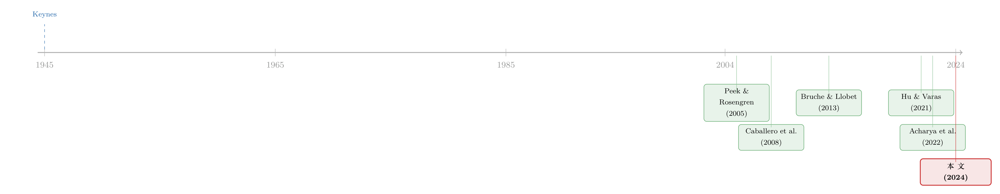

欠你一千万的人，其实是债主的「人质」——把续贷写成一个无懈可击的均衡
本文读的是 Faria-e-Castro, Paul & Sánchez (2024, Journal of Financial Economics)：一家持有企业大部分存量债务的银行，会主动给【濒临违约】的企业更便宜、更多的信贷，把它「养」下去——不是因为银行有病（资本不足、监管套利、信息不对称），而恰恰因为银行很「健康」、很理性。作者用美国 Y-14 监管数据抓出了这种行为，再把它塞进一个动态异质性企业模型，算出它让总量全要素生产率（TFP）下降约 0.25%。
1 引言：一句凯恩斯的玩笑话
先讲一句被无数人引用、却很少有人当真去建模的俏皮话。凯恩斯 (J. M. Keynes, 1945) 说：
你欠银行一千英镑，你在它的股掌之间；你欠它一百万英镑，位置就反过来了。
这句话的味道，所有做信贷的人都懂：当你的债务足够大，违约的威胁本身就成了你手里的筹码——因为你倒下，债主跟着一起赔。问题是，这种「债务越大、借款人越强势」的直觉，在主流的公司金融理论里几乎是反着的。债务积压 (debt overhang, Myers, 1977) 告诉我们，债越重，股东越不愿意再投钱，新债越难借；连续放贷 (sequential banking, Bizer & DeMarzo, 1992) 告诉我们，多头借款会稀释老债主、抬高违约概率。换句话说，教科书里「债多」通常意味着「更糟的条款」。
那么凯恩斯到底有没有道理？这篇论文的全部张力就压在这里：在什么样的市场结构下，凯恩斯的玩笑话会变成一个严格的、可被证明的均衡？
作者的答案干净得让人有点意外——只要放贷是「集中」的就够了。
2 一个反直觉的核心：当「借得越多」反而「借得越便宜」
我们先把直觉讲透，因为整篇论文其实只在反复打磨这【一个】核心。
设想两种世界。第一种叫 分散放贷 (dispersed lending)：市场上有无数家竞争性的银行，谁都不持有这家企业的历史包袱，谁都只关心这一笔新贷款赚不赚钱。这时候定价是「公平」的——好企业拿到合理利率，烂企业借不到钱，仅此而已。债务存量 b 对新贷款的价格毫无影响。
第二种叫 集中放贷 (concentrated lending)：这家企业的存量债务 b，全攥在【同一家】银行手里。于是一件微妙的事情发生了：这家银行很清楚，如果企业现在违约，它不仅做不成新生意，连那笔老债 b 也一起打了水漂。
接着，一个自然的问题是：这家银行该怎么办？
它会算一笔账。给濒死的企业一笔更便宜、更慷慨的新贷款，单看这笔新贷款，银行是【亏】的——它放出去的钱比公平价值还多。但这笔「补贴」买来了什么？买来了企业不违约，于是那笔本来要清零的存量债务 b 被救活了。只要救回来的 b 比新贷款上的亏损更大，银行就【愿意】贴这个钱。
然后，反转出现了：企业越是债台高筑、越是濒临违约（也就是 b 越大、生产率 z 越低），银行手里「待救」的存量债务就越多，它愿意为续贷掏的补贴也就越大。 于是在这个世界里，更差的基本面反而换来更优惠的条款——凯恩斯的玩笑成了方程的解。
请注意这套机制的「干净」之处：它不依赖信息不对称、不依赖银行资本不足、不依赖「赌一把翻身」(gambling for resurrection)、也不依赖萧条的宏观环境。它假设全信息、银行健康、经济正常。这正是作者最想证明的命题——续贷不是 1990 年代日本那种「病态经济」的专利，而是金融中介的一个【一般】特征。
3 静态模型：把直觉写成方程
这是一篇有模型的论文，而模型恰恰是它最漂亮的地方，所以我们一步步把它推出来。
环境。 两期 t=0,1。两类主体：企业，由状态 (z,b) 刻画（z 是生产率，b 是历史债务）；放贷人，风险中性、资金充裕。
第一步：企业问题。 在 t=0，企业可以选择违约、得到零价值；也可以选择继续经营。若继续，它先偿还旧债 b，借入新债（拿到 Qb'、承诺明天还 b'），投资 k'；到 t=1 用一个规模报酬递减 (decreasing returns to scale) 的技术 z(k')^α（α∈(0,1)）生产，再还掉 b'。借贷还受一个约束 b'≤θk'。于是企业「不违约」时的价值是
$$V(z,b;Q)=\max_{b',k'\ge 0}\; -\,b\;-\;k'\;+\;Q b'\;+\;\beta_f\big[\,z(k')^{\alpha}-b'\,\big]$$
$$\text{s.t.}\quad b'\le \theta k'$$
这里 Q 是【新债的价格】：企业每承诺明天还一块钱，今天能拿到 Q 块。所以 Q 越高，等于借钱越便宜（毛利率约为 1/Q）。β_f 是企业的贴现因子。
由此得到关键的违约门槛（论文的 Proposition 1）：存在一个 Q_min(z,b)，企业违约当且仅当 Q<Q_min(z,b)。直觉上，债越重、生产率越低，企业越需要一个「足够便宜」的新贷款才肯活下去，所以——
$$Q_{\min}(z,b)\ \text{strictly increasing in } b,\quad \text{strictly decreasing in } z,\quad \lim_{b\to\infty} Q_{\min}(z,b)=\beta_f+\tfrac{1}{\theta}$$
第二步：分散放贷的基准。 竞争性放贷人贴现因子为 β_k（且 β_k>β_f）。完全竞争意味着：
$$Q=\begin{cases}\beta_k & \text{if } \beta_k\ge Q_{\min}(z,b)\\[2pt] 0 & \text{otherwise}\end{cases}$$
也就是说，所有不违约的企业都拿到【同一个】价格 β_k，与 (z,b) 无关——资本的边际产出 (MPK) 被拉平。更高产的企业借得多、投得多，但价格和债务存量 b 没有半点关系。这就是「正常」的世界。
第三步：集中放贷，也是全文的引擎。 现在让同一家银行持有 b，并让它做 Stackelberg 领导者——它在报价时，会把「我的报价会如何影响企业的违约决策」内部化进来。银行的问题可以写成一个特别透明的形式：
这个式子把全部经济学都摆在了台面上。约束 Q≥Q_min(z,b) 的含义是：银行要想让企业别违约，报价就不能低于违约门槛。而由于 ∂b'/∂Q>0，目标函数对 Q 是严格递减的——所以银行的最优策略，是在「能保住老本」的前提下，给出【尽可能低】的 Q，只要这样做还能 W≥0。
于是最优报价 Q* 自然分成三段（论文的 Proposition 3）：
$$Q^*(b,z)=\begin{cases}\beta_k & \text{if } Q_{\min}(z,b)\le \beta_k\le Q_{\max}(z,b)\\[2pt] Q_{\min}(z,b) & \text{if } \beta_k\le Q_{\min}(z,b)\le Q_{\max}(z,b)\\[2pt] 0 & \text{otherwise}\end{cases}$$
读这三段就读懂了整篇论文：
- 第一段（正常区）。 当
Q_min<β_k，企业本来就活得下去，银行按竞争价β_k放贷，和分散世界没区别。 - 第二段（续贷区，evergreening region）。 当
b足够大或z足够低，违约门槛Q_min(z,b)超过了β_k——这意味着在分散世界里，这家企业【已经该死了】（没人愿意以这么优惠的价格借它钱）。但在集中世界里，只要Q_min<Q_max，银行就会主动报出Q*=Q_min(z,b)>β_k，给出比市场更优惠的条款，把企业续命。而且b越大、z越低，这个补贴越慷慨。这一段，就是凯恩斯那句话的数学形态。 - 第三段（清算区）。 当
Q_min>Q_max，连银行都救不动了（救它的成本超过了能收回的老本），于是清算。
这里 Q_max(z,b) 是银行【愿意救】的上限价格，由 W(z,b;Q_max)=0 隐式定义；它随 b 递增、随 z 递减——越烂的企业，银行反而愿意为它出越高的价。这正是与「风险转移」「债务积压」泾渭分明的地方：在债务积压里，债越重、投资越被抑制；在这里，债越重、条款越好、投得越多——结论恰好【相反】。
4 从模型到数据：怎么在美国「抓住」续贷
模型再漂亮，也要回答一个问题：现实中的银行，真是这么放贷的吗？
作者转向美联储的 Y-14 监管数据——它提供了美国贷款层面的细颗粒信息，最妙的是，里面带着银行自己对每个借款人的风险评估，尤其是 违约概率 (probability of default, PD)，作者就用它来度量企业的「财务困境」。企业用纳税人识别号 (TIN) 来界定；样本里绝大多数是私人企业，财务数据取各银行报送的中位数以降噪。
识别的核心思路，是经典的 Khwaja & Mian (2008) 固定效应法：在【同一家企业、同一时点】上，比较不同银行对它的放贷行为，从而把企业层面的信贷需求冲击彻底吸收掉，只留下银行端的差异。模型的预言非常具体——一家银行如果持有某企业债务的份额越大（也就是放贷越「集中」），它对【陷入困境】的企业就越会反其道而行：给更多的钱、要更低的利率。数据印证了这一点，而且这种效应会传导到企业层面，影响其总债务与投资。
最关键的一句，写在引言里：作者在【经济没有衰退、银行资本相对充裕】的年份里，同样观察到了这种行为，并且证明那些基于「银行资本不足」的续贷理论无法解释他们的发现。这就把「续贷=病态经济专属」的旧叙事彻底打开了。
一个要诚实说出的样本偏差：Y-14 偏向较大的企业。脚注里给的数字是，作者样本中能观察到 90% 以上债务的企业，平均固定资产为 $10.7M，而全经济（BEA 固定资产除以企业数）只有 $3.9M。也就是说，这套抓续贷的镜头，拍的是大企业的世界。
5 宏观代价：被「养活」的僵尸，与丢掉的 0.25% TFP
静态模型有两个它自己回答不了的问题：企业会不会因为「反正明天有人救」而今天就【故意】多借债（一种道德风险）？被救活的低效企业，会不会挤掉更高效的新进入者？
于是作者把这套机制嵌进一个动态异质性企业模型——以 Hopenhayn (1992) 为骨架，加上债务、违约与金融摩擦，做法承袭 Hennessy & Whited (2007)、Gomes & Schmid (2010)、Clementi & Palazzo (2016)。动态化的好处，是让企业的「生产率—债务—资本」联合分布【内生】出来，从而能做一次干净的反事实：把集中放贷的经济，和分散放贷的经济摆在一起比。
结果有两面。一面，续贷让银行更频繁地收回投资，好处以更低利率的形式传给借款人，于是在位企业的债务和资本在不同设定下增加了 1% 到 3%。另一面，被救下、被多投的，恰恰是那些更不高产、并且挡住了更高产新企业进入的家伙。两相加总，总量 TFP 相对分散放贷经济下降了约 0.25%。
更有意思的是 TFP 损失的【分解】：作者把它拆成三块——企业规模、平均企业生产率、错配 (misallocation)。结论是，大头来自企业规模：续贷的经济里企业普遍偏大，而在规模报酬递减的技术下，企业过大本身就会拖累生产率。（关于「集中」与「错配」如何在一般均衡里彼此放大，可参见《市场太「集中」，资本就会配错地方》。）
作者还顺手把自己「企业是否被补贴」的度量，和文献里五花八门的「僵尸企业」定义对了一遍：像 Schivardi et al. (2022) 那种基于杠杆和生产率的刻画，确实和他们的度量相关。但有个反直觉的细节值得记住——被补贴的企业虽然更大、更高杠杆、更低效，它们同时也【更危险、付着更高的绝对利率】，只是相对那个「没有续贷的反事实」而言，利率被压低了。所以「僵尸」在这里不是「躺平不付息」，而是「本该死、却被相对优惠地续上了一口气」。
（顺带一提，把「关系」与「集中」算进一国信贷总账的视角，本博客也聊过，见《银行为什么舍得先亏本拉客？》。）
6 文献脉络
这条线的源头，是日本的「失去的十年」。Peek & Rosengren (2005) 发现，经营糟糕的企业反而获得了更多信贷，而且这种放贷潮和资本薄弱的银行、银企的紧密关联绑在一起——这是「续贷」最早的实证。紧接着，Caballero, Hoshi & Kashyap (2008) 给「僵尸企业」下了一个影响深远的定义（付着低于优质客户的利率），并展示了它如何让产业的岗位创造与破坏双双萎缩、生产率停滞，甚至外溢去伤害健康的同行。
在这两篇奠基之作上，文献长出了两簇。一簇是【实证】，把类似证据扩展到欧债危机里的意大利、葡萄牙、西班牙等多国——Schivardi et al. (2022)、Blattner et al. (2023)、Jiménez et al. (2022)——但它们大多共享同一个叙事：续贷主要发生在资本薄弱的银行、严重的衰退里。另一簇是【理论】，但理论一直没有统一范式：有的押在信息不对称上（Rajan, 1994；Hu & Varas, 2021），有的押在「赌一把翻身」上（Bruche & Llobet, 2013；Acharya et al., 2021b），有的押在「延迟确认损失」上（Begenau et al., 2021）。

本文所处的位置，恰恰是去【拆掉】上面那个共享叙事。它和 Hu & Varas (2021) 一样，相信续贷不必伴随资本受限的银行；但它走得更远——它假设全信息、健康银行、正常经济，单靠「集中持债」这一个结构性事实，就在均衡里逼出了续贷。它与 Becker & Ivashina (2022) 共享「续贷未必源于风险转移、也可能源于昂贵的破产程序」这一观察；又与 Bizer & DeMarzo (1992) 的连续放贷形成镜像对照——多头借款让人过度举债、抬高违约概率，而单头（集中）放贷让企业借得更多、违约概率却更低。Acharya et al. (2022) 的综述，可视作这条脉络当下的集大成。
7 评论与延伸（Q&A + 研究方向）
(a) 几个可能的疑问
Q：这跟「债务积压」(debt overhang) 到底差在哪？听起来都和「债太重」有关。
方向正好相反。债务积压里，债越重，股东越不愿投资、越难借新债（好处会被老债主截走）；本文里，债越重，银行越愿意给优惠条款、企业越能多借多投。原因是视角不同——债务积压站在「分散、被稀释的债主」一边，本文站在「集中、想保本的单一债主」一边。
Q：和「赌一把翻身」(gambling for resurrection) 有什么不一样？两者都是给烂企业放贷。
「赌一把」靠的是银行自身资本不足、有限责任，所以愿意拿储户的钱去博一个小概率翻身。本文的银行是【健康】的、全信息的，它不是在赌，而是在做一笔期望为正的精算：贴一点新贷款的钱，去赎回一笔更大的老债。机制不靠银行有病，这正是它的新意。
Q：识别用的是 Khwaja-Mian 同企业固定效应，可它真能洗掉需求侧吗？
同一企业、同一时点的银行间比较，能吸收掉「这家企业此刻想借多少」的共同需求冲击。但它识别的是【相对】行为——持债份额更大的银行相对放得更多。它不直接给出总量效应，这也是为什么作者必须再搭一个动态一般均衡模型来谈宏观后果。两条腿缺一不可。
Q：0.25% 的 TFP 损失，是不是小到可以忽略？
别被绝对数字骗了。这是相对「分散放贷反事实」的【常态】损失，不是危机年的一次性冲击；而且它的大头来自「企业规模被推大」，这是个会持续累积、且很难被察觉的慢性病。再小的常态性错配，乘上时间和整个经济体量，也不容小看。
Q：被续贷的企业既然「更危险、付更高利率」，凭什么还叫它被补贴？
关键是参照系。它们付的绝对利率确实高（因为它们确实危险），但相对那个「根本没有续贷、它们早已被清算」的反事实而言，它们拿到的条款被显著压低了。补贴是相对反事实定义的，不是相对健康企业定义的。
Q：这套机制要求债务高度「集中」在一家银行，可现实中大企业大多是银团、多头借款，机制还成立吗？
这正是模型的边界。论文用债务的
HHI来度量集中度，并坦承Y-14样本偏向借款更分散的大企业，所以这很可能是个【保守】估计——真正集中持债的中小企业身上，效应只会更强。把镜头对准单一主办行的中小企业，是这条线最值得深挖的方向。
(b) 几个可能的研究问题与提案
1. 把这套机制搬到公司债市场。
【经济故事】本文讲的是银行贷款里的「集中持债」。但在公司债里，同样存在持仓高度集中的债主——某些保险公司、共同基金可能持有一只困境债的绝大多数。它们会不会在再融资、债务置换 (exchange offer) 中，对濒临违约的发行人给出系统性更优的条款，以保住自己手里的老券？
【可行性】中。需要把 eMAXX/Lipper 这类机构持仓数据与债券层面的再融资条款、收益率拼起来，用「同一发行人、同一时点、不同持有人集中度」做横截面识别。难点在于债券持有人的协调与搭便车问题，比单一银行复杂。
2. 外资持有人会不会「更舍不得」续贷，还是「更狠心」清算？
【经济故事】外资债主往往受本国监管、会计与政治约束，对「养僵尸」的容忍度可能系统性不同于本土银行。集中度相同，国籍不同，续贷行为会不会分叉？这直接关系到一国信用市场对外资开放后的错配水平。
【可行性】中。可用跨国银团贷款 (DealScan) 或主权/公司债持有人国籍数据，在 Khwaja-Mian 框架里加一层「持有人国籍 × 困境」的交互。识别要小心外资进入本身的选择性。
3. 把续贷度量与债券二级市场流动性挂钩。
【经济故事】如果一家发行人被「续上了一口气」，它的债券违约概率被人为压低，二级市场的流动性、买卖价差、做市意愿会不会随之改变？换句话说，续贷会不会在悄悄补贴这只债的【流动性】？
【可行性】高。TRACE 提供了债券层面的逐笔成交，把本文的「是否被补贴」度量（或用持债集中度代理）与价差、Amihud 非流动性指标对齐即可。这是一个相当 doable 的延伸。
4. 利率长期下行如何放大续贷区。
【经济故事】当 β_k 上升（无风险利率走低、放贷人更有耐心），模型里的「续贷区」会不会扩张，让更多本该清算的企业被救？这把本文与「低利率—错配」那条文献（Gopinath et al., 2017；Liu et al., 2022）直接焊在了一起。
【可行性】中。可在本文的动态模型里做利率比较静态，再用过去二十年的低利率区间在 Y-14 中找实证对应。识别难点是利率与宏观周期的内生纠缠。
5. 续贷的「道德风险前置」：企业会不会预期被救而提前多借？
【经济故事】静态模型里 b 是给定的，但动态里它内生。一个尖锐的问题是：企业若知道自己集中借款、明天可能被救，今天会不会就【故意】加杠杆？这是续贷的隐性成本。
【可行性】中。需要在企业层面识别「主办行集中度」的外生变动（如银行合并带来的被动集中度上升），看企业事后的杠杆路径。银行合并是个现成的准自然实验。
我的判断
这篇论文最大的贡献，是把一个被引用了八十年的凯恩斯式直觉，第一次以「不依赖银行病态」的方式写成了一个干净的、可证明的均衡，并且用美国、在银行资本充裕的年份、用监管数据把它实打实地抓了出来——它真正改写的，是「续贷只属于日本式萧条」这个流传已久的叙事。理论的简洁（三段式 Q*）和实证—宏观的两段式架构（Khwaja-Mian 识别 + 动态 GE 量化）配合得相当克制而有力。
我对识别的主要担心有两处。其一，Y-14 偏向大、偏向分散借款的企业，而机制恰恰在【集中持债的中小企业】身上最强，所以实证抓到的很可能只是冰山一角，外推到整个经济时需要谨慎。其二，Khwaja-Mian 给的是「相对」效应，宏观 0.25% 的 TFP 损失高度依赖动态模型的微观基础与校准——文献里别人换一套微观基础，量级就会变，这一点作者自己也坦承。
后续我最想看到的，是把「持债集中度」的外生变动（例如银行合并造成的被动集中化）拿来做一次更硬的因果识别，看它是否真的【事前】诱发了企业加杠杆——也就是验证那个最让人不安的道德风险渠道。再往前一步，是把这套镜头从银行贷款搬到公司债与信用市场，看看在持仓同样高度集中的债主那里，凯恩斯的玩笑话是不是依然成立。
参考文献
- Bizer, David S., DeMarzo, Peter (1992). Sequential banking. Journal of Political Economy 100(1), 41–61.
- Bruche, Max, Llobet, Gerard (2013). Preventing zombie lending. Review of Financial Studies 27(3), 923–956.
- Caballero, Ricardo, Hoshi, Takeo, Kashyap, Anil (2008). Zombie lending and depressed restructuring in Japan. American Economic Review 98(5), 1943–1977.
- Clementi, Gian Luca, Palazzo, Berardino (2016). Entry, exit, firm dynamics, and aggregate fluctuations. American Economic Journal: Macroeconomics 8(3), 1–41.
- Gomes, Joao F., Schmid, Lukas (2010). Levered returns. Journal of Finance 65(2), 467–494.
- Hennessy, Christopher A., Whited, Toni M. (2007). How costly is external financing? Evidence from a structural estimation. Journal of Finance 62(4).
- Hopenhayn, Hugo (1992). Entry, exit, and firm dynamics in long run equilibrium. Econometrica 60(5).
- Hu, Yunzhi, Varas, Felipe (2021). A theory of zombie lending. Journal of Finance 76(4), 1813–1867.
- Khwaja, Asim Ijaz, Mian, Atif (2008). Tracing the impact of bank liquidity shocks: evidence from an emerging market. American Economic Review 98(4), 1413–1442.
- Myers, Stewart C. (1977). Determinants of corporate borrowing. Journal of Financial Economics 5(2), 147–175.
- Peek, Joe, Rosengren, Eric S. (2005). Unnatural selection: perverse incentives and the misallocation of credit in Japan. American Economic Review 95(4), 1144–1166.
- Schivardi, Fabiano, Sette, Enrico, Tabellini, Guido (2022). Credit misallocation during the European financial crisis. Economic Journal.
- Becker, Bo, Ivashina, Victoria (2022). Weak corporate insolvency rules: the missing driver of zombie lending. AEA Papers and Proceedings 112, 516–520.
- Acharya, Viral, Crosignani, Matteo, Eisert, Tim, Steffen, Sascha (2022). Zombie Lending: Theoretical, International, and Historical Perspectives. NBER Working Paper 29904.